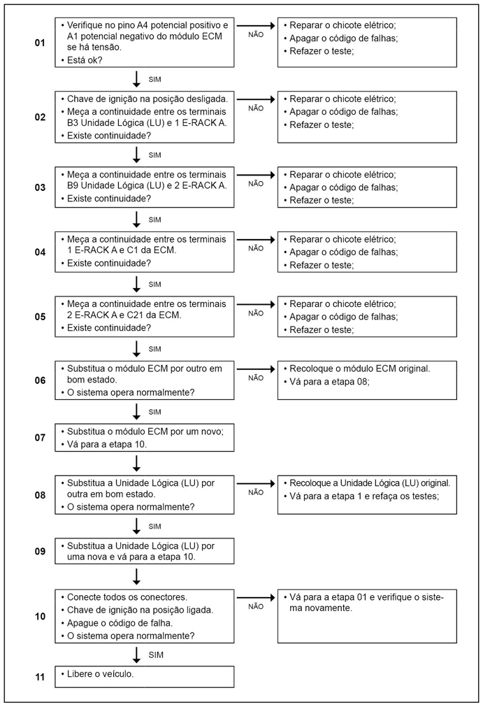

Legenda
- Conector de diagnósticos (OBD)
- Conector E-rack A
- Resistor da rede CAN somente para veículos com motorização Cummins
- PTM (onde está localizado resistor de 120 Ω nos pinos 18 e 6 do conector B)
- Cluster X1(onde está localizado resistor de 120 Ω nos pinos 14 e 15 do conetor X1)
- Volkslog
- Unidade Lógica (LU)
- Unidade dosadora (arla 32)
- ECM
- TCU
- ABS
- VTTS
- Sensor Nox
- Circuito apenas para motores Cummins
- Ponto de massa localizado dentro do E-Rack
- Potencial positivo
- Ponto de massa localizado na coluna A lado direito
- Relê de bloqueio
- Ponto de massa localizado na parte frontal do chassi
- Interruptor superior de embreagem
Descrição da Falha
Mensagem do nível de uréia ausente
na rede CAN.
Indicação de Falha
Luz de alerta acende constantemente com o símbolo  e ativa o alarme sonoro longo, com o veículo andando ou
parado.
e ativa o alarme sonoro longo, com o veículo andando ou
parado.
Os quatro leds devem piscar, e
então ser desligados. Enquanto a falha persistir, sempre que a linha 15
for desligada e
ligada novamente, os leds devem piscar novamente.
Estratégia de Monitoramento
A Unidade Lógica (LU) monitora a presença da mensagem na CAN de nível de uréia no tanque.
Efeito da Falha
Não haverá indicação do nível de uréia no painel.
Possíveis Falhas
FMI 9: Ausência de mensagem na rede CAN.
- Verificar o chicote de
comunicação CAN para o módulo ECM.
Avisos
  Atenção! Atenção!
Leia sempre as Recomendações para Diagnósticos.
Registro de Falhas em Outros Módulos
----
Passos do Diagnóstico de Falhas
Considerar os esquemas elétricos do veículo

|